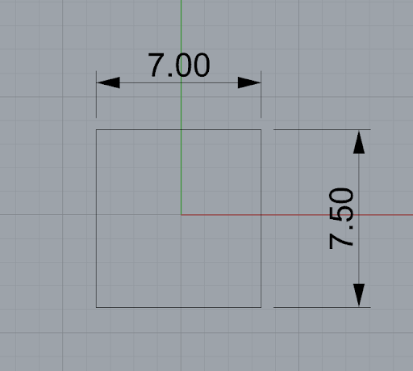

Mon terrain subit-il des masques solaires ?
Tu as un terrain. Des bâtiments voisins, un relief ou de la végétation dense sont présents autour de lui. Tu veux savoir si ta façade sud sera effectivement ensoleillée en hiver, ou si elle sera masquée une partie de la journée. C'est une question à se poser avant de figer l'orientation et l'implantation du bâtiment.
Pourquoi cette question compte
Un masque solaire peut ruiner une stratégie bioclimatique bien pensée. Un bâtiment orienté plein sud avec de grandes baies vitrées ne captera presque rien en hiver si un immeuble voisin le prive de soleil entre 9h et 15h. L'analyse des masques est donc une des premières vérifications à faire sur un terrain urbain ou semi-urbain, avant de dimensionner les vitrages et les protections solaires.
À l'inverse, un masque partiel peut être un atout en été : il réduit les apports solaires aux heures chaudes sans supprimer les apports d'hiver. Le tout est de l'anticiper plutôt que de le subir.
Deux approches selon ton stade
Approche légère — Autodesk Forma (Esquisse)
Si tu n'as pas encore de modèle 3D détaillé, Forma permet de placer une masse volumétrique simple dans son contexte urbain et de visualiser les heures d'ensoleillement par façade directement dans le navigateur. C'est la méthode la plus rapide, sans installation.
Voir la fiche Forma →Approche avancée — Rhino + Grasshopper + Ladybug (APS)
Si tu travailles déjà dans Rhino, Ladybug permet une analyse plus fine : heures d'ensoleillement direct par point de surface, visualisation sur toute l'année ou sur une période précise, heatmap colorée sur les façades. C'est l'approche documentée dans ce tutoriel.
Voir la fiche Rhino + Ladybug →Faire le test : masques solaires avec Rhino + Ladybug
Le tutoriel ci-dessous a été réalisé sur un modèle simplifié aux dimensions de PhITEM (7 m × 7,5 m), avec un bâtiment voisin simulant un masque d'ombre.
Étape 1 — Modéliser le bâtiment et ses voisins sur Rhino
Dessiner l'emprise du bâtiment en 2D avec la commande Polyline, vérifier
les cotes avec l'outil Cotation, puis extruder en 3D avec l'outil Boîte. Modéliser
de la même façon les bâtiments voisins qui pourraient créer des masques.

Étape 2 — Ajouter les composants dans Grasshopper
Ouvrir Grasshopper (commande Grasshopper dans Rhino). Ajouter les
composants suivants sur le canvas :
LB Import EPW+File Path— pour charger le fichier météoLB Sunpath— pour la course du soleilLB Analysis Period— pour définir la période d'analyseLB Direct Sun Hours— pour calculer les heures d'ensoleillement- Un composant
Geometrypour ton bâtiment, un autre pour chaque masque voisin
La connexion complète de ces composants est détaillée à l'étape suivante.
Étape 3 — Connecter les blocs et lancer la simulation
Relier les composants selon le schéma ci-dessous :
File Path→ entrée_epw_filedu blocImportEPW- Sortie
locationdeImportEPW→ entrée_locationdeSunpath - Sortie
hoysdeAnalysisPeriod→ entréehoys_deSunpath - Sortie
vectorsdeSunpath→ entrée_vectorsdeDirectSunHours - Geometry de ton bâtiment → entrée
_geometrydeDirectSunHours - Geometry des masques → entrée
context_deDirectSunHours Number Slider(valeur 1) → entrée_grid_sizedeDirectSunHoursBoolean Toggle(valeur True) → entrée_rundeDirectSunHours
Lancer la simulation avec F5 ou Solution → Recompute.

Étape 4 — Lire la heatmap d'ensoleillement
Le résultat s'affiche directement sur le modèle Rhino : le toit et les façades sont colorés selon les heures d'ensoleillement direct reçues sur la période d'analyse. Rouge et jaune signifient très ensoleillé, bleu signifie masqué.

Comment lire le résultat
La heatmap montre la distribution spatiale de l'ensoleillement sur l'année complète ou sur une période précise. Pour l'analyse de masques en conception, les valeurs à regarder en priorité sont les heures reçues sur la façade sud en hiver (décembre-janvier) : si elles sont inférieures à 4-5 heures par jour, les apports solaires passifs seront très limités.
Pour affiner, relancer la simulation sur une période précise en ajustant le composant
LB Analysis Period (décembre uniquement, ou les mois de chauffage). Cela
permet de distinguer ce qui est masqué seulement en été de ce qui l'est toute l'année.
Limites
- La modélisation des masques sur Rhino demande de connaître la hauteur et l'emprise des bâtiments voisins. Ces données sont parfois difficiles à obtenir en phase esquisse.
- Ladybug calcule des heures d'ensoleillement direct, pas un gain thermique : pour quantifier l'effet sur les besoins de chauffage, il faut passer sur Pléiades.
- Sur des sites complexes (relief montagneux, canyon urbain dense), la modélisation peut devenir lourde.
- Pour une analyse très rapide sans installation, Forma est plus accessible que Rhino + Ladybug.
Alternatives
- Autodesk Forma — analyse d'ensoleillement rapide sur masses volumétriques, dans le navigateur, sans installation.
- Pléiades — intègre les masques proches dans la simulation thermique complète, avec impact quantifié sur les besoins.